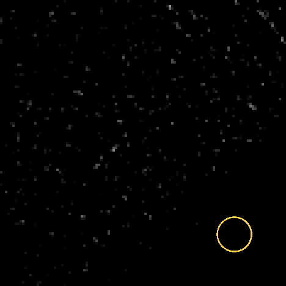
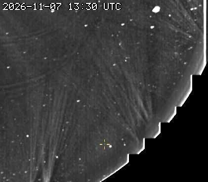
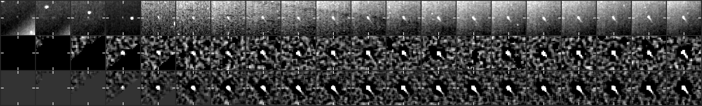
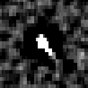

31 frames, 2026-11-07 13:15 to 20:45 UTC, peak 248 sigma, brightening.
report_cf_20261107120006 (posted 2026-11-07T17:00+00:00; our alert came 2.6 h before it; we were following it 1.4 h before the post).A fixed patch of sky at 2x the camera's resolution: significance maps (stars and corona modelled out), the last 8 maps added along the fitted motion, black below 2.5 sigma. The ring rides the fitted path: green on frames with a measured hit, yellow before the first hit. A real object crosses the patch inside the ring; noise does not travel.

The object's quadrant at half resolution, from just outside the occulter out to the field edge, the last frames up to the newest hit: each frame minus the minimum of the previous 24 hours (streamers and stars stay, the static corona and glare cancel), lightly smoothed, no stacking, on a linear scale from -2 sigma of the frame's noise (so the noise shows as grain). The crosshair follows the fitted path, yellow on a measured hit. For where the object sits in the corona and what else is moving; a faint object is easier to judge in the stacked patch above.

Top: raw frame. Middle: significance map of that frame. Bottom: the detector's view, the last 8 maps stacked along the motion. Ticks mark the predicted position; a comet is a steady dot on the ticks.


2048x1920 full-resolution frame, origin upper left, x right, y down, 0-based (the Sungrazer 'Upper Left' convention). They are the centre of the stacked detection predicted from the fitted motion, good to about a pixel, not per-frame centroids; hunters' measurements tend to fall ~1 px right and up of these.
| date | HHMM | x | y | sigma |
|---|---|---|---|---|
| 2026-11-07 | 1315 | 1632 | 1770 | 15.9 |
| 2026-11-07 | 1330 | 1628 | 1766 | 25.0 |
| 2026-11-07 | 1345 | 1624 | 1762 | 35.6 |
| 2026-11-07 | 1400 | 1620 | 1758 | 47.2 |
| 2026-11-07 | 1415 | 1616 | 1754 | 61.6 |
| 2026-11-07 | 1430 | 1612 | 1750 | 75.1 |
| 2026-11-07 | 1445 | 1608 | 1746 | 87.5 |
| 2026-11-07 | 1500 | 1604 | 1742 | 87.9 |
| 2026-11-07 | 1515 | 1598 | 1736 | 89.4 |
| 2026-11-07 | 1530 | 1594 | 1732 | 98.0 |
| 2026-11-07 | 1545 | 1590 | 1728 | 121.4 |
| 2026-11-07 | 1600 | 1586 | 1724 | 138.1 |
| 2026-11-07 | 1615 | 1582 | 1720 | 153.3 |
| 2026-11-07 | 1630 | 1578 | 1716 | 169.2 |
| 2026-11-07 | 1645 | 1574 | 1712 | 183.0 |
| 2026-11-07 | 1700 | 1570 | 1708 | 191.6 |
| 2026-11-07 | 1715 | 1566 | 1704 | 194.6 |
| 2026-11-07 | 1730 | 1562 | 1700 | 193.2 |
| 2026-11-07 | 1745 | 1558 | 1696 | 175.9 |
| 2026-11-07 | 1800 | 1550 | 1692 | 89.9 |
| 2026-11-07 | 1815 | 1550 | 1688 | 148.0 |
| 2026-11-07 | 1830 | 1546 | 1684 | 142.6 |
| 2026-11-07 | 1845 | 1542 | 1680 | 136.7 |
| 2026-11-07 | 1900 | 1538 | 1676 | 128.7 |
| 2026-11-07 | 1915 | 1532 | 1670 | 127.8 |
| 2026-11-07 | 1930 | 1528 | 1666 | 149.8 |
| 2026-11-07 | 1945 | 1524 | 1662 | 187.6 |
| 2026-11-07 | 2000 | 1520 | 1658 | 225.4 |
| 2026-11-07 | 2015 | 1516 | 1654 | 237.3 |
| 2026-11-07 | 2030 | 1512 | 1650 | 244.0 |
| 2026-11-07 | 2045 | 1508 | 1646 | 247.6 |
Form layout (HHMM x y):
1315 1632 1770 1330 1628 1766 1345 1624 1762 1400 1620 1758 1415 1616 1754 1430 1612 1750 1445 1608 1746 1500 1604 1742 1515 1598 1736 1530 1594 1732 1545 1590 1728 1600 1586 1724 1615 1582 1720 1630 1578 1716 1645 1574 1712 1700 1570 1708 1715 1566 1704 1730 1562 1700 1745 1558 1696 1800 1550 1692 1815 1550 1688 1830 1546 1684 1845 1542 1680 1900 1538 1676 1915 1532 1670 1930 1528 1666 1945 1524 1662 2000 1520 1658 2015 1516 1654 2030 1512 1650 2045 1508 1646
Sigma inside the ring on the fitted position vs the brightest 0.1% of the whole patch. A real object sits clearly above the tail.
| frame | ring | tail | |
|---|---|---|---|
| 20261107T121514 | 0.0 | 5.0 | |
| 20261107T123014 | 0.0 | 5.0 | |
| 20261107T124514 | 2.4 | 5.0 | |
| 20261107T130014 | 12.5 | 5.5 | |
| 20261107T131514 | 26.0 | 5.7 | hit |
| 20261107T133014 | 26.5 | 6.0 | hit |
| 20261107T134514 | 32.2 | 6.3 | hit |
| 20261107T140014 | 47.5 | 6.5 | hit |
| 20261107T141514 | 64.5 | 5.8 | hit |
| 20261107T143014 | 79.6 | 6.3 | hit |
| 20261107T144514 | 97.3 | 6.2 | hit |
| 20261107T150014 | 105.2 | 6.2 | hit |
| 20261107T151514 | 114.4 | 6.0 | hit |
| 20261107T153014 | 123.6 | 6.0 | hit |
| 20261107T154514 | 124.3 | 6.3 | hit |
| 20261107T160014 | 122.0 | 6.9 | hit |
| 20261107T161514 | 128.0 | 6.0 | hit |
| 20261107T163014 | 144.3 | 6.1 | hit |
| 20261107T164514 | 158.8 | 7.1 | hit |
| 20261107T170014 | 172.0 | 6.9 | hit |
| 20261107T171514 | 175.8 | 7.4 | hit |
| 20261107T173014 | 177.6 | 7.7 | hit |
| 20261107T174514 | 170.9 | 6.3 | hit |
| 20261107T180014 | 161.5 | 5.7 | hit |
| 20261107T181514 | 170.3 | 6.5 | hit |
| 20261107T183014 | 169.4 | 6.1 | hit |
| 20261107T184514 | 168.2 | 5.9 | hit |
| 20261107T190014 | 164.0 | 5.8 | hit |
| 20261107T191514 | 160.2 | 6.0 | hit |
| 20261107T193014 | 162.8 | 6.6 | hit |
| 20261107T194514 | 175.3 | 6.8 | hit |
| 20261107T200014 | 194.0 | 6.7 | hit |
| 20261107T201514 | 211.6 | 7.0 | hit |
| 20261107T203014 | 233.1 | 8.4 | hit |
| 20261107T204514 | 251.7 | 7.0 | hit |
Written 2026-11-07 21:21 UTC.